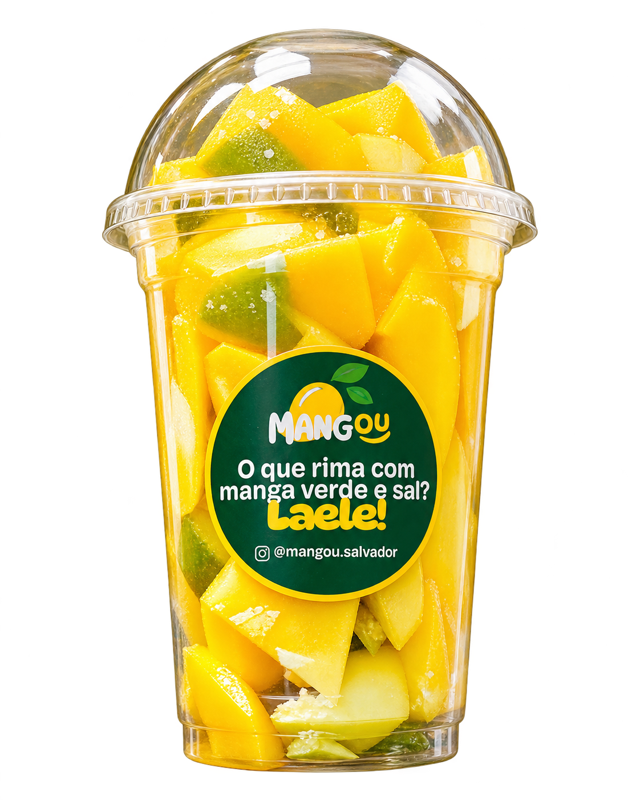

Não tem erro
Manga, limão e sal.
Direto da Barra,
Salvador
Manga fresca, limão e temperos
do seu jeito. Um sabor que é
a cara de Salvador.

Nossos sabores
Do limão com sal à mistura que surpreende. Cada sabor tem um jeito único de fazer a manga brilhar.
Manga, limão e sal.
Manga, limão, sal e Tajín.
Manga, limão, sal, pimenta-do-reino, fumaça em pó e páprica defumada.
Manga, limão, lemon pepper e leite condensado.
Consulte os ingredientes com a Mangou no Instagram.
Manga, limão, mostarda e mel.
Imagem ilustrativa do produto. Apresentações, preços e disponibilidade no Instagram.
Na nossa comunidade
Receitas, bastidores, gente real
e muito amor por essa cidade.
Onde encontrar
Um passeio pela orla.
Uma pausa pra mangar.
Farol da Barra
como referência.
Sábados e domingos
Confirme o ponto e o horário nos Stories. Dias extras também são avisados por lá.
Sabor, cultura
e muita gente boa.
Manga fresca, limão e temperos do seu jeito. Da Barra, pra ir com você. Tem sol, tem mar, tem manga. Melhor ainda com resenha.
#MangouSalvador
Registros reais de um sabor que
já faz parte da rotina de muita gente.